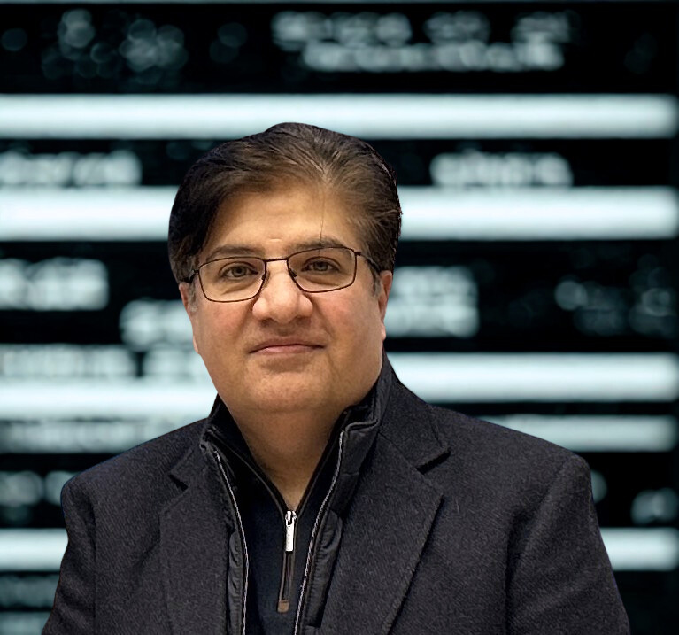

Trust and security for IoT, cloud and smart cities
Trust evaluation models, detection and prevention at the edge, and zero trust architecture for high speed municipal networks.
University of Limerick, Ireland
Associate Professor in Cybersecurity, Department of Electronics and Computer Engineering. Member of Lero and DIGI+.
Fifteen years of research and teaching across Ireland, South Korea, Malaysia and Pakistan, built around one question: how do you keep trust intact when the network has no fixed shape? The work runs from geographical routing in vehicular networks to blockchain authentication, intrusion detection and zero trust architecture for edge based smart cities.

Limerick, V94 T9PX, Ireland
I am an Associate Professor in Cybersecurity at the University of Limerick, where I work on information security architecture within the Cyberskills programme and teach practising engineers alongside full time students.
My research career began with vehicular ad hoc networks at Universiti Teknologi Malaysia, where I built geographical routing and congestion control schemes for intelligent transportation systems. That thread widened into trust and security provision for the Internet of Things, wireless body area networks, smart grids and software defined networks, and more recently into blockchain based authentication, machine learning driven intrusion detection and zero trust architecture for edge based smart cities.
Before Limerick I held posts at Bahria University Islamabad, including Cluster Head for Cybersecurity, completed a postdoc on blockchain privacy preservation at Incheon National University in South Korea, and worked as a research assistant on Malaysia's intelligent transportation systems programme. I continue to serve as an adjunct professor in Canada and as an academic advisor for the School of Computing at Bath Spa University Academic Centre RAK, Dubai.
Alongside research I edit books and special issues, review for IEEE and Elsevier journals, and supervise masters and doctoral students working on automotive security, drone assisted routing, GRC compliance and anomaly detection.
Six active lines of work, each with current students, papers in review or funded collaboration behind it.
Trust evaluation models, detection and prevention at the edge, and zero trust architecture for high speed municipal networks.
Geographical and beaconless routing across VANETs, the Internet of Vehicles, wireless body area networks and underwater sensor networks.
Anomaly and signature based detection for power line communications, industrial IoT, smart homes and e-commerce infrastructure.
Architecture, security modelling, automated flow rule formation and interdomain rule integration for embedded devices.
Tri-tier architectures joining data communication, generative AI and regulatory compliance for connected medical systems.
Parallel and secure processing pipelines, including FPGA based designs for IoT computer vision workloads.
Every journal article, conference paper and book chapter from the CV. Search by title, author, venue or year. Click a bar to isolate a year, click it again to clear. Titles without a stored DOI open a Google Scholar search.
Drop cover images into assets/img/ using the filenames in assets/js/publications.js and they replace the generated covers automatically.
Jaguar Land Rover, Shannon, Ireland, 2023
Designed a system addressing man in the middle and replay attacks, establishing a reliable and accurate channel for V2I communication.
Role: supervisor, MEng Information and Network Security
Higher Education Commission and Planning Commission Pakistan, 2018 to 2022
National R&D and human resource programme for cybersecurity under Vision 2025, aimed at closing the skills gap and building domestic capability.
Role: key researcher Capital cost: PKR 1,239.74M, about EUR 398,540
NAVTTC, Government of Pakistan, 2020 to 2022
Delivered high end skills training in cybersecurity, embedded systems, machine learning and deep learning at Bahria University Islamabad.
Role: trainer Capital cost: PKR 7M, about EUR 23,248
Higher Education Commission Pakistan, Startup Research Grant 1558
Routing and congestion control design for dense urban vehicular traffic, conducted with Bahria University Islamabad.
Role: key researcher
Ministry of Higher Education Malaysia, UTM
Conducted with the Research Management Centre at Universiti Teknologi Malaysia under vote QJ130000.2528.06H00.
Role: key researcher Capital cost: MYR 40,000, about EUR 8,213
University of Limerick, ongoing
Module design and delivery on integrated information security architecture, infrastructure and standards, taught to industry practitioners across Ireland.
Role: module lead
Thirteen completed theses at Bahria University Islamabad.
Discover Applied Sciences, Springer, 2024. Collection
Polytechnic Journal. Journal
Editorial team. Board
Electronics, MDPI, 2022. Special issue
Applied Sciences, MDPI, 2022. Special issue
Journal of Sensors, Hindawi, 2021. Special issue
Informatics, MDPI, 2020
Hindawi, 2018
2021 to 2025
Stanford University and Elsevier ranking. UL announcement and dataset.
In production
Single-authored volume with Springer Nature Switzerland.
2023 to date
2022
Department of Electronics and Computer Engineering, with membership of Lero from 2023.
2021
For the optimized cluster-based dynamic energy-aware routing protocol for wireless sensor networks in agriculture precision.
2021
Bahria University, Islamabad.
2020 to 2021
Bahria University, Islamabad.
2021 to 2022
Blockchain-based privacy-preserving authentication for intelligent transportation systems.


I welcome enquiries about doctoral supervision, joint proposals, industry projects in network and automotive security, and invitations to review or guest edit.
Dept. of Electronics and Computer Engineering, University of Limerick, Limerick, V94 T9PX, Ireland